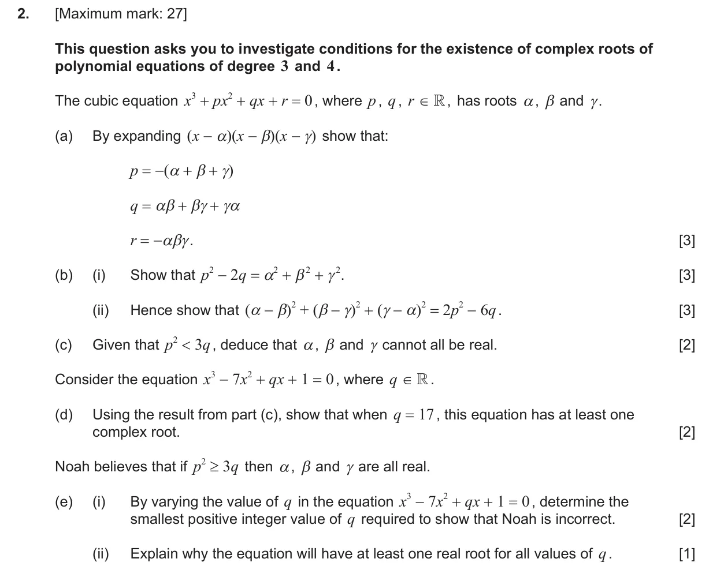
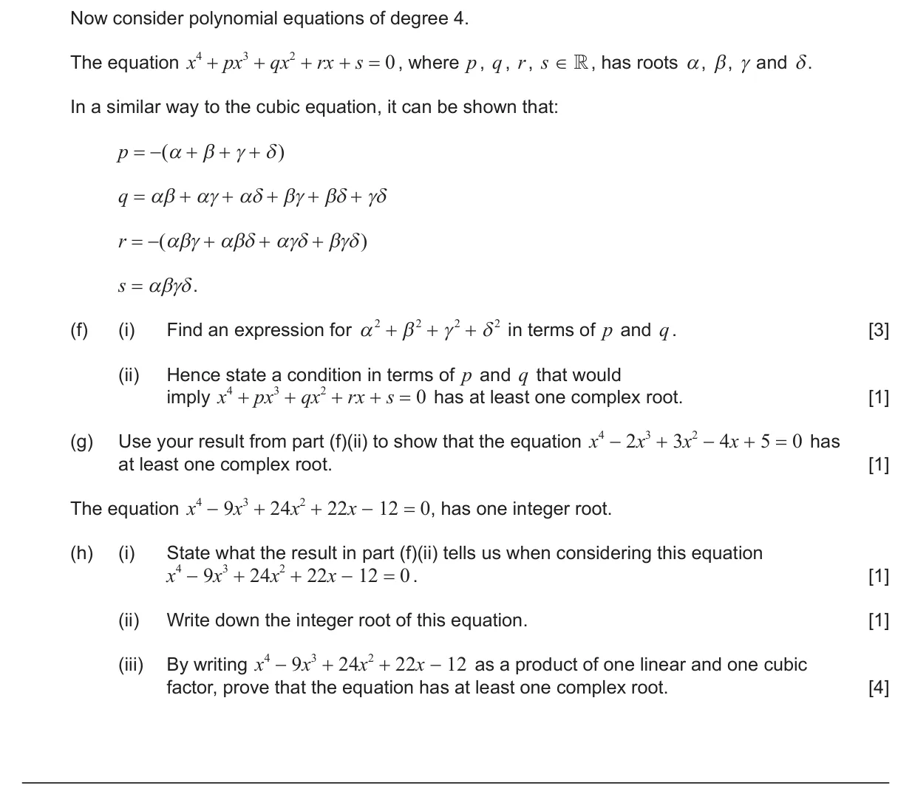
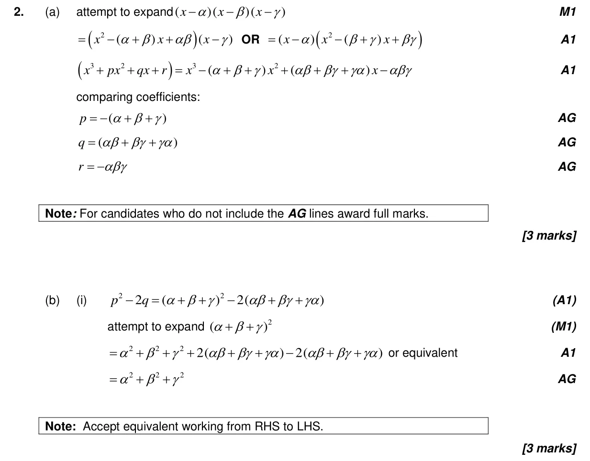
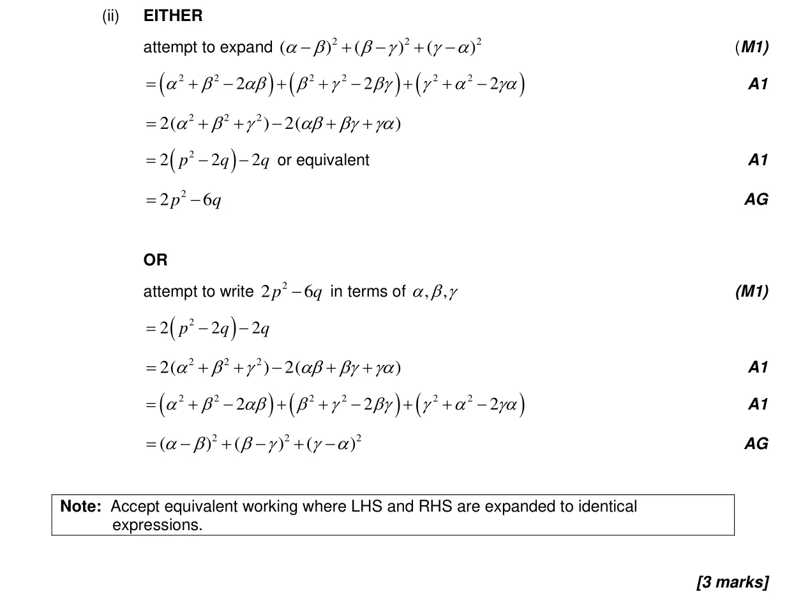
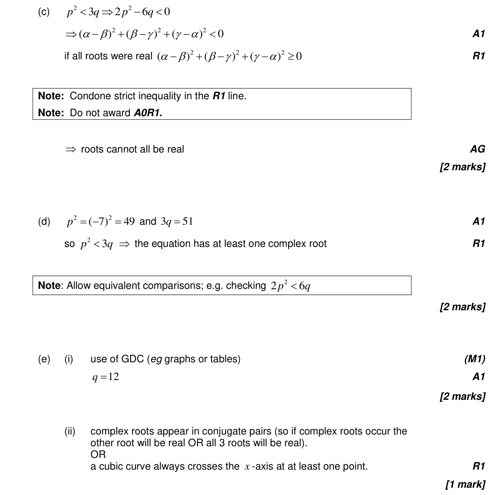
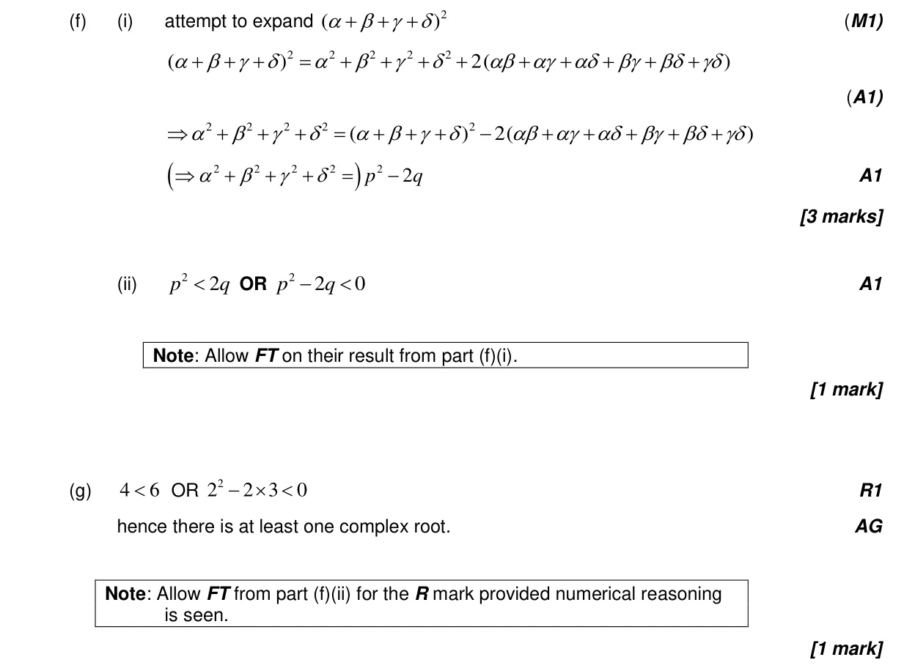
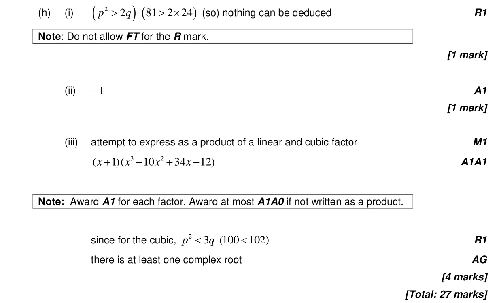

2.12 Polynomial functions: factor and remainder theorems, sum and product of roots1.6 Simple deductive proof1.15 Proof by induction, by contradiction and by counterexample2.10 Solving equations graphically and analytically1.14 Conjugate roots, De Moivre's theorem, powers and roots of complex numbers
Question


Markscheme




